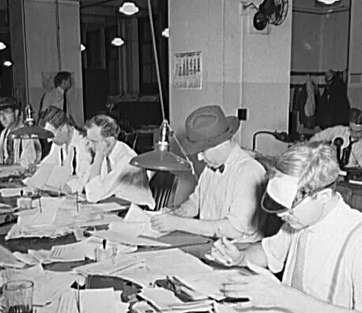
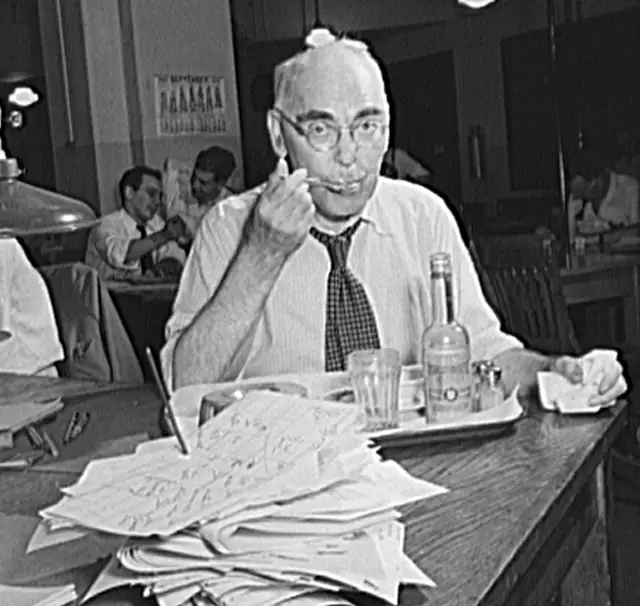
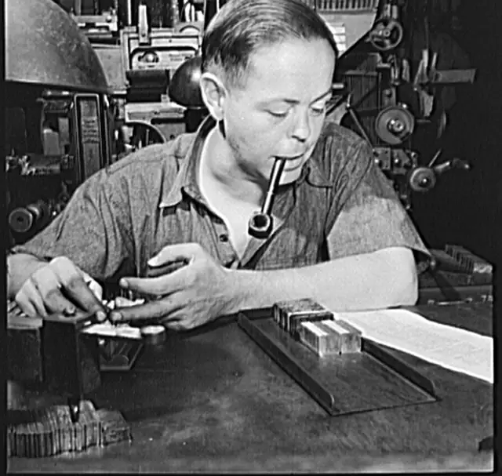
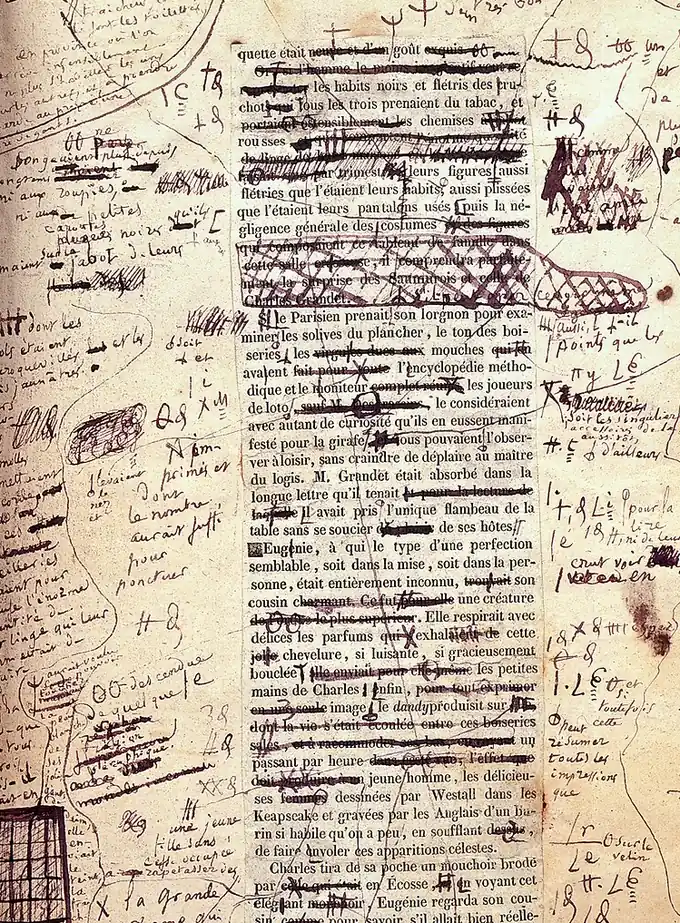
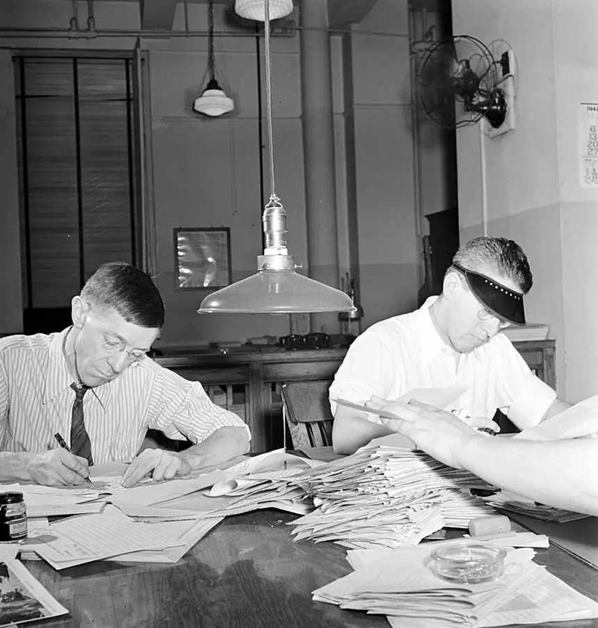
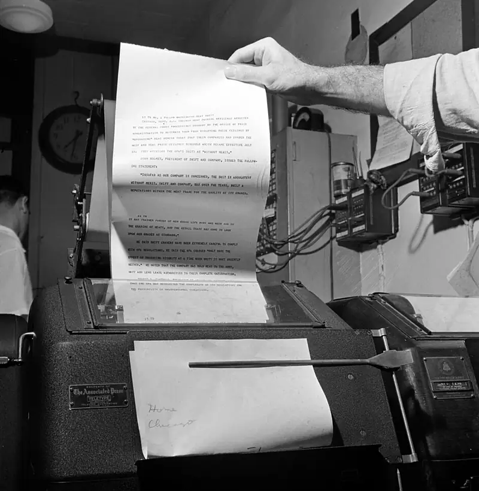

Simpler words. Much better.
Every good story
starts as a
bad one.
We print the messy middle: the cut paragraphs, the rejected headlines, and the edits that saved them.

Only one is ready. That's the point.
In this issue
-

I named a file final_FINAL_v3 and lost a semester
Eleven copies of one web page, and the wrong file that ate October.
Published
-

Forty headlines for one story about parking
He wrote all forty. We ran none of them. Then came the forty-first.
Draft 3
-

The comma that cost me a friend
A group project, a shared document, and one very small mark.
Draft 2
-

What my editor crossed out
Every red line from one essay, printed in full and explained.
Draft 1
Read it from the top. Watch it get shorter.
One sentence, four drafts
-
Draft 1
Due to the fact that there are not enough parking spaces on campus, a large number of students are finding themselves arriving late to their classes.
Why so many words?
-
Draft 2
Due to the fact that there are not enough parking spaces on campus, a large number ofCampus is short on parking, so students arefinding themselves arrivinglateto their classes.Closer. Now show me.
-
Draft 3
Campus is short on parking, so students are late.By 7:40 every space in Lot C is gone.Yes. Cut the rest.
-
Final
Lot C was full by 7:40.
Print it.
Spiked. All of them.
The cut pile
Parking: A Crisis in Several Actsone act, topsIs Your Thesis Statement Lying to You?it isn'tTen Commas That Will Change Your Lifename threeFinals Week, But Make It Hauntedplease noAn Open Letter to My Own Bibliographysend it privately

Yes, even that one.
Send us your worst draft
We take anything unfinished: a paragraph, a headline, a page you are scared to open. Issue Three closes December 4.
